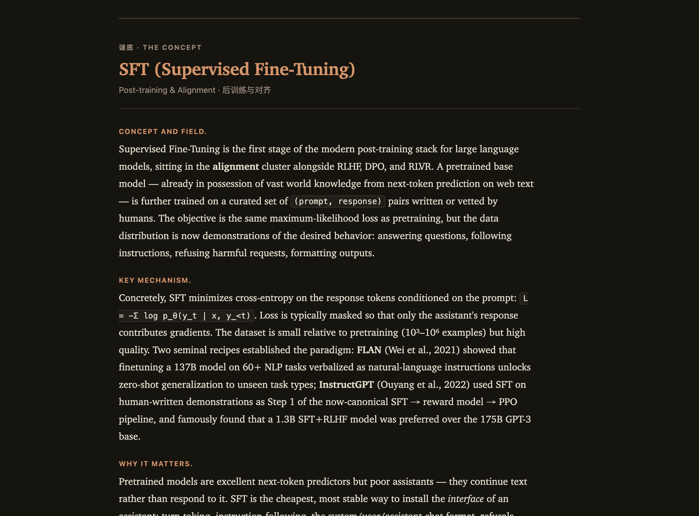
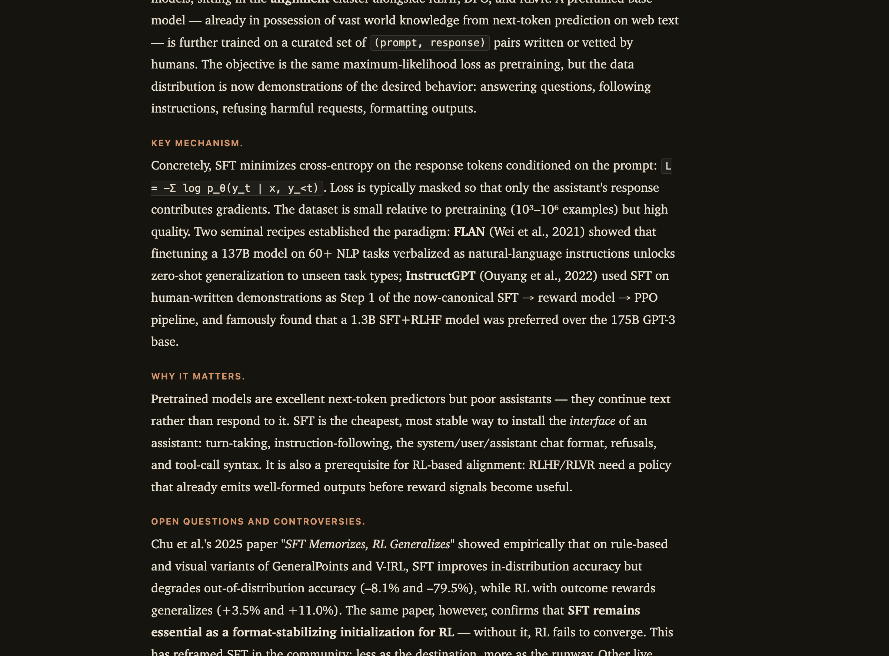

现在的站点已经有一个迷人的灵魂——先读寓言，再揭晓概念。这份方案不推翻它，而是为它装上"动力系统"：让初学者每一次打开都看见自己走了多远，每一篇都更想读下一篇，并且真正记得住。
每条建议都问同一个问题：它会让一个初学者多读一篇、并且记得更牢吗？留存与黏性不是装饰——它们来自三个被反复验证的学习行为：看得见的进度、主动回忆、以及降低"下一步"的门槛。下面的优化全部围绕这三点。
先沿着真实路径走一遍：首页 → 概念群 → 故事 → 揭晓 → 下一步。每一格下方标出"流失点"——读者在这里失去继续下去的动力。
Hero + 全局进度条 + 概念群网格。信息清楚。
概念名隐藏为 · · · 直到读过，保护悬念。
排版优雅，沉浸感强。
内容扎实、专业。
线性翻页可用。


所有具体改动都从这四条原则推导而来。它们是"为什么"，后面的选项是"怎么做"。
Make the territory visible.
把抽象的 0/100 变成一张能被点亮的版图。每读一篇都改变画面——这是最便宜也最强的回访理由。
Retrieve before you reveal.
在揭晓前让读者押一个猜测。主动回忆是记忆留存的头号杠杆，而且让"揭晓"那一下更爽。
A staircase, not a wall.
概念按"一句话 → 故事对照 → 机制 → 深入"分层展开。新手拿到要义，练习者继续往下挖。
Never end on a dead end.
读完不是终点：里程碑反馈、相关概念、明日一篇——永远给一个继续的理由。
你的第一优先级。核心想法：把"100 篇"做成一张会被点亮的知识版图，并在首页给一个"继续 / 连续天数 / 今日一篇"的动力条。下面是同一目标的几个可选呈现，可混搭。
现在进度是 0 / 100 一根细线，填满它毫无回报。把整个领域画成一张图，读过的格子点亮——读者一眼看见"我走了多远 / 还剩哪片没探索"，空格本身就是召唤。这同时服务留存（情绪回报）和记忆（空间定位）。
每个色块是一篇故事 · 点亮 = 已揭晓 · 虚线框 = 建议下一篇
为何推荐：保留了 12 概念群的结构（教学逻辑清楚），又给出强烈的"填满"动机；按行排版在手机上自然堆叠，桌面端一屏看尽全局。
取舍：极强的"整片版图"观感，适合做首页主视觉；但牺牲了概念群标签的可读性，更适合作为A 的氛围版 hero，点进去再看 A 的分行细节。
回访的三个经典钩子：一键继续（消除"从哪开始"的摩擦）、连续天数（习惯养成）、今日一篇（每天一个明确、有限的目标）。给初学者"今天只要读一篇"的轻量承诺，比"还剩 99 篇"友好得多。
继续上次
连续天数
今日一篇
你说可以重构教学流程——这是最大的留存与记忆机会。现在是"读 → 点揭晓 → 长文"。提议升级为四拍：读 → 猜 → 揭 → 桥接 + 分层。左暖（故事）右冷（概念）的色温翻转，让"揭晓"成为一个有仪式感的瞬间。
▍寓言 · 先读故事
老木匠从不亲手雕花。他只把学徒做坏的活儿一件件挑出来，说"这里浅了""那里歪了"，从不示范一刀该怎么下……日子久了，学徒的手竟比谁都稳。
揭晓前，先押一个猜测 · 你觉得这讲的是？
◆ 谜底 · The Concept
用"人更喜欢哪个回答"的偏好信号去微调模型，而不是给它标准答案。
三处改动，各自命中一个目标：① 先猜触发主动回忆（记忆留存）；② 桥接句把寓言和概念显式连起来——这本是产品的核心承诺，现在却留给读者自己脑补；③ 分层展开把那堵"长文墙"变成楼梯，初学者读一句话即有收获，练习者逐层深入。现有长文内容无需重写，只要按已有的"关键机制 / 为何重要 / 争议"小标题折叠即可。
现在揭晓后只有"上一篇 / 下一篇"。增加三件事让动力延续：里程碑反馈（"你点亮了对齐群的一半！"）、相关概念（RLHF → DPO → GRPO 的横向跳转，而非只能线性翻页）、以及一个30 秒自测把刚读的概念再激活一次（间隔重复的种子）。
顺着这条线索 · Related concepts
初学者第一眼要回答两个问题：这是什么？ 和 我该从哪开始？ 现状两者都缺。提议把首页从"12 个术语网格"升级为"一条推荐路径 + 一张版图 + 一个继续按钮"。
12 个陌生术语群会让新手瘫痪。用 P0/P1 优先级（数据里已经有了！）编排一条"新手必读"路径，把选择的负担从读者身上拿走。高级用户依旧可以自由浏览版图。
先读故事，再揭晓概念 · 百篇中文寓言，照亮大语言模型的核心思想
新手路径 · 从这 4 篇开始
"故事先行"很妙，但若不解释，新访客会困惑。首次访问时给一个一次性的三步说明（之后不再出现），把规则讲清楚——读、猜、揭。
一个看似与 AI 无关的小故事。先别急着对号入座。
押一个概念。猜错也没关系——这一步让你记得更牢。
看到概念本体，以及故事到底对应它的哪一部分。
保留暖色编辑气质，但引入"故事暖 / 概念冷"的色温二元——这不只是好看，而是把产品的核心叙事（从感性故事走向理性概念）编码进了配色。再把那枚偏灰的 #8b4513 提纯为更有生命力的赤陶色。
现状
提议 · 暖纸 + 冷墨双色温
按"投入产出比"排序：先做几乎零成本、立刻提升黏性的快赢，再做需要内容/交互工程的大改。全部基于现有的 Astro + 本地存储，无需后端或登录。